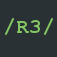

 Rainfall
Rainfall
is a Cydia repository made by nobbele aka 4pplecracker
Add to Cydia
Hosted Packages
Easybooter
This is a package meant to make coolbootercli easier to use for non experienced people!
More info